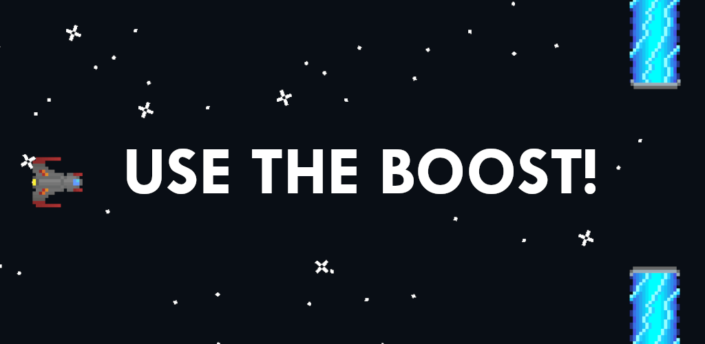

Use The Boost! out on Android
About the project
Use The Boost! is an Android game made in Godot, developed by me.
It's free and without any forced ads.
Try it here.
After many years of constantly prototyping big ideas, I wanted to actually finish a game.
It had to be a game that I'd enjoy, and it had to be very small.
Tools I used
The game itself was made in Godot.
Godot is open source, which means it's also completely free.
The graphics were made in Aseprite.
A very fun and great pixel art tool.
You could probably also just use MS Paint, if you want a free option.
The sounds were made in Ableton with Xfer Serum
Ableton and Serum are both amazing, but also incredibly overkill for this project.
You can easily create great retro game sounds, for free.
I haven't played much with it, but check out jsfxr.
Tricks
The spaceship never moves. I instead move the walls and the stars.
This is so I avoid huge numbers, and so I can check the location of the walls, without basing it off of the spaceship.
It also contains everything in the same position, which makes it a lot easier to work with.
To give a sense of depth, I made some stars slower and some faster, to make it seem as if some are closer, and some are further.
The really fast stars are given larger sprites, to further sell the idea of depth.
The length of the walls are set programically.
You can very easily create repeating sprites in Godot, which enabled me to ensure that the game would look right, on any device, and not use overly large sprites.
Other notes
The hardest thing to implement, was AdMob. (advertisements)
It gave me a lot of trouble, and at one point it would constantly either crash my game, or the engine.
I moved the project into a new folder, and then it randomly started working correctly.
Be sure to pay close attention to everything, when implementing AdMob.
I used the plugin by Shin-NiL.
Google is very strict when it comes to targeting kids.
Be sure to write "watch ad ..." on any button that activates an ad, or your app may be rejected.
I learned that "watch video ..." is not good enough.
And with that said, I think it's completely fair.